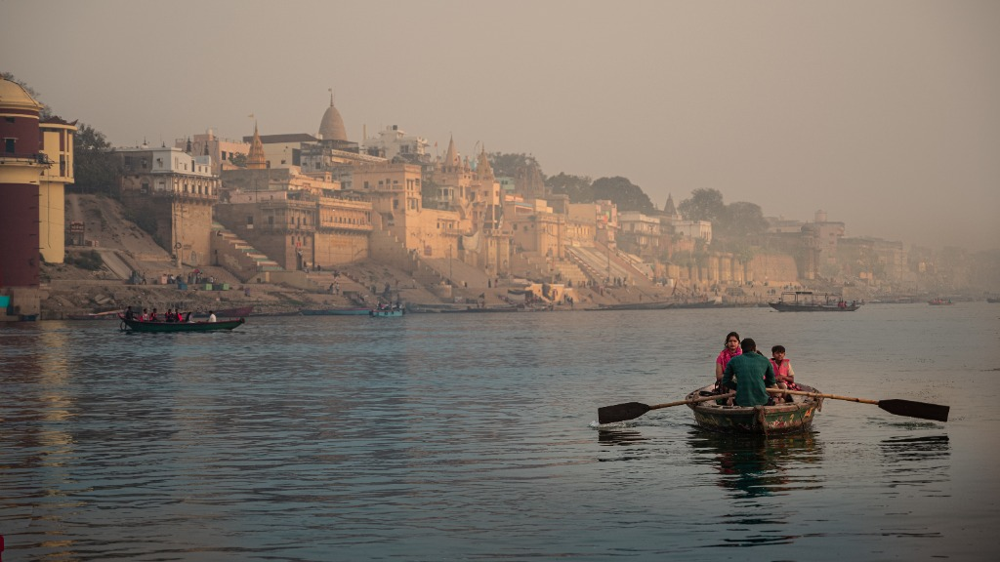
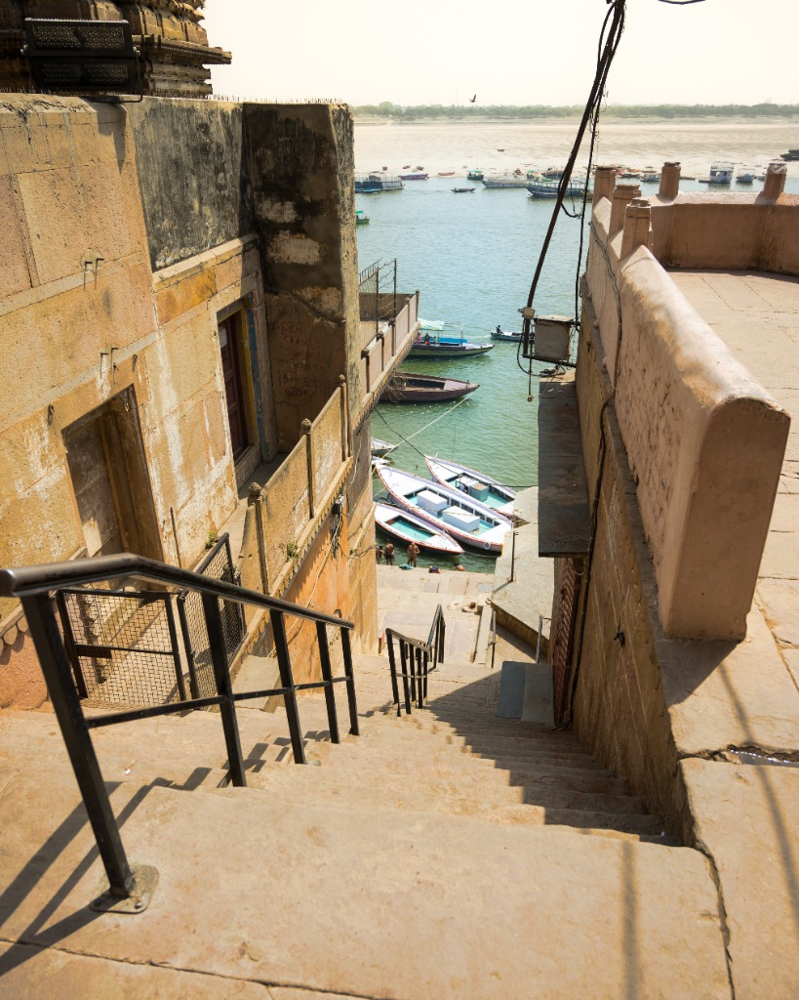
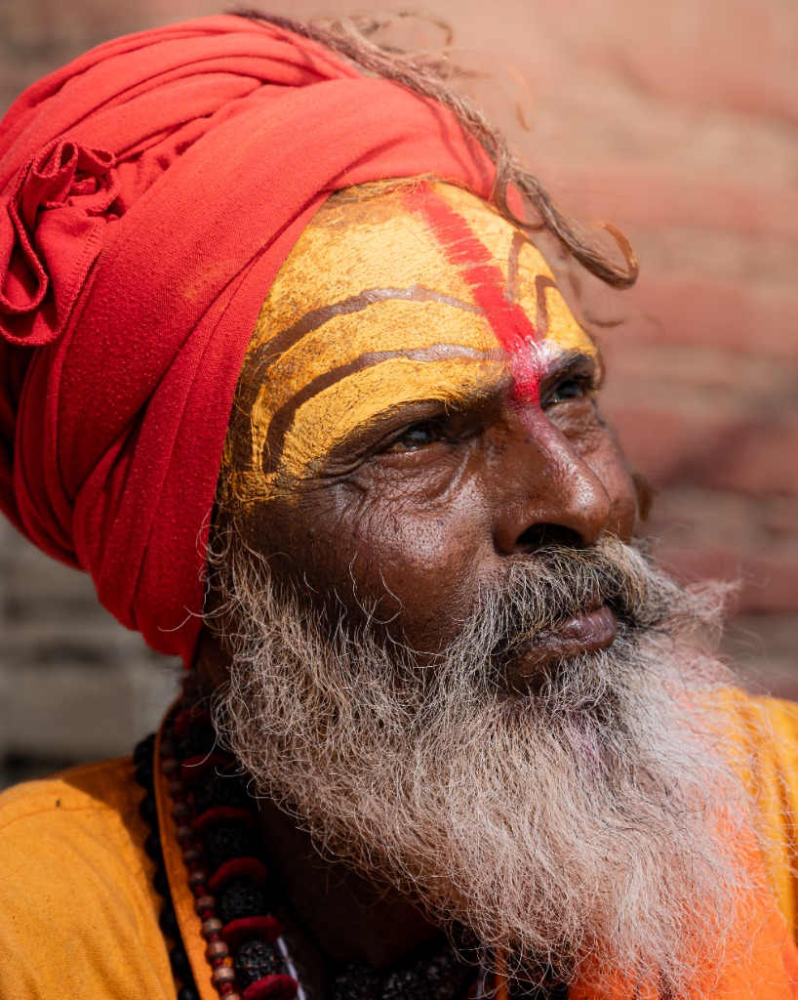
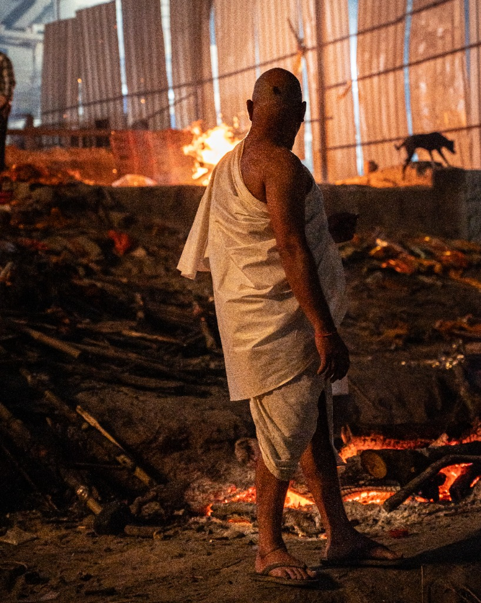

Sacred / Documentary
Varanasi
Varanasi doesn't reveal itself — it overwhelms you. The oldest continuously inhabited city on earth exists somewhere between myth and reality, where funeral pyres burn beside morning prayers, and the Ganga carries both the living and the dead. This series is an unfiltered meditation on Kashi — its priests, its sadhus, its ghats, and the raw, unflinching cycle of life and death that defines every stone along the river.

First light on the Ganga — Oars cut through still water as the ancient skyline of Kashi dissolves into morning haze

The descent — Worn stone steps lead from the old city down to the water's edge, where boats wait in the afternoon sun

The face of Kashi — A sadhu's weathered gaze holds lifetimes of renunciation, his tilak telling a story older than the city itself

Manikarnika — Where the fire never dies. A figure in white stands witness to the city's most ancient truth — that all paths end at the river